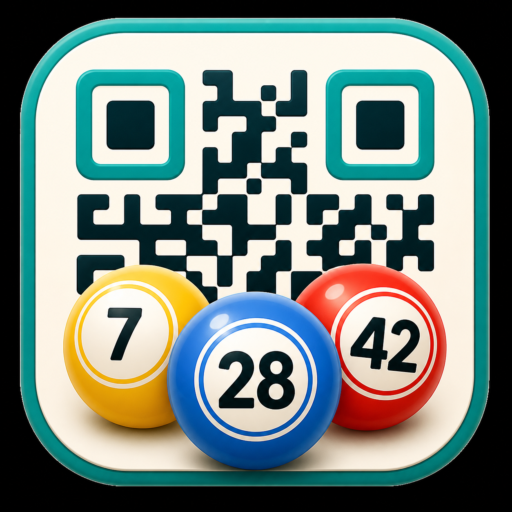
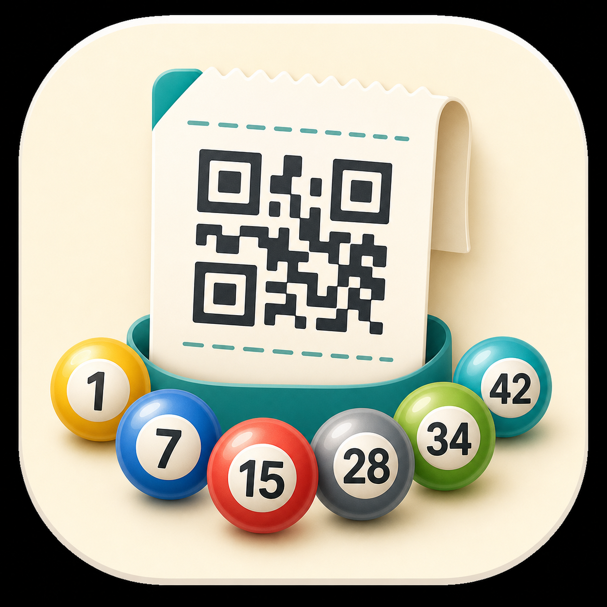

선택됨후보 1
QR 코드와 세 개의 로또공을 크게 보여주는 직관적인 스타일입니다.
assets/previews/icon-candidate-1.png
모바일 홈 화면 바로가기 아이콘으로 사용할 후보 3개입니다. 선택하면 해당 이미지를 앱 아이콘으로 연결하고 필요한 크기를 생성합니다.

선택됨QR 코드와 세 개의 로또공을 크게 보여주는 직관적인 스타일입니다.
assets/previews/icon-candidate-1.png
스캔 프레임과 한 개의 로또공으로 작은 크기에서 가장 단순하게 읽힙니다.
assets/previews/icon-candidate-2.png

영수증형 티켓과 여러 번호공을 보여주는 친근한 스타일입니다.
assets/previews/icon-candidate-3.png